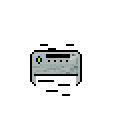

Podłączanie urządzeń peryferyjnych do komputera (monitor, klawiatura, mysz, drukarka)
Urządzeniami peryferyjnymi nazywamy dowolne części komputera inne niż procesor i pamięć operacyjna. Są to na przykład: Klawiatura, monitor, mysz, drukarka.
Podłączenie do komputera myszy lub klawiatury to bardzo prosta rzecz, wystarczy wpiąć USB w odpowiednie miejsce z przodu lub z tyłu komputera.
komputer sam wykryje urządzenia i będą od razu zdolne do działania(tzw. Plug and play).
Wiele współczesnych myszy i klawiatur udostępnie bardziej rozbudowane programy do zarządzania każdym klawiszem, podświetleniem etc.
Przykładem takiego programu może być Razer Synapse:

Podłączenie monitora jest także bardzo proste.
Podłączamy kabel zasilający do monitora, a drugi koniec do gniazdka. W następnej kolejności podłączamy kabel(DVI/HDMI/VGA) do komputera i do odpowiedniego miejsca z tyłu monitora.
Tak wygląda:
HDMI:
VGA:

DVI(-D):

Podłączanie drukarki też nie należy do najtrudniejszych zadań.
Już po podłączeniu do prądu drukarka będzie działać, jeśli ma działać na USB, musi ono zostać podłączone zarówno do drukarki jak i komputera.
Po chwili komputer powinien wykryć nowe urządzenie. Jeśli tak się nie stało, znaczy to że będzie trzeba pobrać ze strony producenta drukarki jej sterowniki.
Po instalacji sterownika wchodzimy w Ustawienia>Urządzenia i w zakładce drukarki dodać nowe urządzenie.
Teraz wszystko powinno już działać i można spokojnie wydrukować stronę testową.
